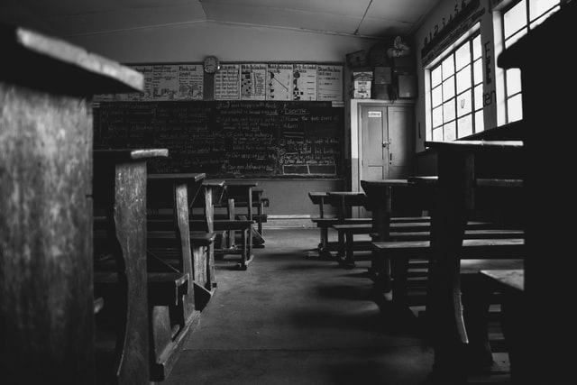

The second and most famous part of the “Brick in the Wall” trilogy directly continues the narrative line and themes begun in “Happiest Days of Our Lives.” If the fantasy in the previous song was the secretly imagined comeuppance that the teacher was said to get when he got home, here it has grown into full revolt as first Waters and Gilmour, and then an auditorioum full of school children, sing an anthem of youthful unrest against the harsh treatment of their cynical teachers. Since its release in 1979, countless adolescents and adults alike have adopted “Another Brick in the Wall, Part 2” as an anarchistic hymn, using it to strike a blow against what they saw as years of educational oppression. While some apply the song’s biting lyrics to specific kinds of schooling, others use it as a rallying cry against any government mandated form of education. As a result, some countries, such as South Africa, have banned the song from being played on the radio, a few going so far as to place a national ban on both the album and Pink Floyd. However, counter to these extremist views of total educational anarchy, the song was written as an attack against a specific type of learning, that which Waters endured as a child. The lyrics are quite specific to this effect, rebuking those teachers first described in “Happiest Days” who use “thought control” and “dark sarcasm” to mold the school children into mindless drones of society. For Waters, the rote learning and sadistic delivery of his school teachers produced little more than faceless, social clones who knew the definition of an acre yet who could not produce an original, imaginative thought. Accordingly, the rallying cry of “[W]e don’t need no education” can actually be teased in two directions. Firstly, considering that the clause is a double negative, the negatives of “don’t” and “no” cancel each other out, producing an affirmative, as in “We [do] need education,” suggesting that yes, education can be a good thing in developing well-rounded individuals. Secondly, the double negative also acts as rhetorical litotes in this context, used especially to emphasize the point being made, as if Waters is saying “We don’t need this type of education.” In this sense, “Another Brick, Part 2” is not so much a song about complete revolution as it as an anthem about reclaiming one’s individuality; it’s a criticism against the types of teachers and systems that, as in Pink’s case, ridicule an imaginative child for writing poetry.
